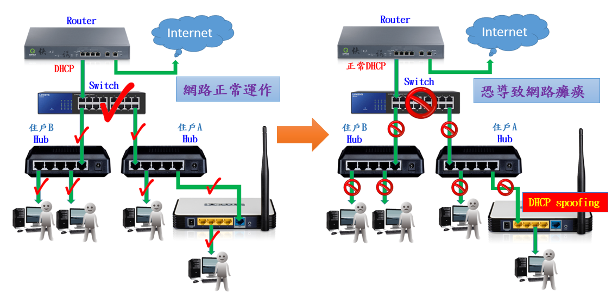

身為大學生到外地求學並在外租屋已是常態，在外租屋確實常遇到網路突然無法使用的狀況是非常令人困擾的，然而造成網路終止服務的原因卻是其他租屋的學生，因分不清楚WLAN與LAN隨意插入網路孔造成網路異常發生DHCP spoofing(如下圖)，房東雖可從中架設具有DHCP snooping的Layer 2 Switch即可解決此問題，但是因本考量而無法付諸行動，因此有了創作I Watchman的想法，用更低廉的價格解決此問題。

I Watchman OS裝載Kali Linux，如偵測網路異常先由I Watchman發送Email通知網路管理者，再針對惡意DHCP Server進行DHCP Starvation Attack，偽造大量Mac address針對惡意DHCP Server租用DHCP，使惡意DHCP Server癱瘓而不再配發IP給正常使用者。偵測封包工具可使用tshark或snort，DHCP Starvation Attack可使用dhcpstarv或Yersinia。 DHCP Starvation Attack能篡改封包標頭中的Source MAC位址（綠色段）以欺騙網路上的電腦及裝置

使用者於區域網路Router下層路由器建置I Watchman並設定完成後，即可啟動網路偵測模組，當終端使用者在區域網路內架設分享器設定錯誤出現DHCP spoofing將導致網路癱瘓時，I Watchman將會寄送Email通知使用者，並終止該終端使用者架設分享器配發IP。
Step.1 使用者於區域網路Router下層路由器建置I Watchman（如下圖 右）
Step2. 透過I Watchman LCD顯示獲取I Watchman IP，並開啟Web輸入I Watchman IP ，預設帳號admin、預設密碼admin。
Step3. 取得正常DHCP Server IP。
Step4. 於I Watchman Web輸入正常DHCP Server IP，並輸入區域網路發生DHCP spoofing時將寄送之Email（如下圖左）
Step5. 開始網路偵測後即完成I Watchman設定
Step6. 如網路狀態正常，I Watchman為偵測模式
Step7. 如網路狀態異常，I Watchman啟動區域網路防禦機制
Step8. 當終端使用者在區域網路內架設分享器設定錯誤出現DHCP spoofing時，I Watchman將會寄送Email通知使用者
{kind=link}
{kind=link}
{kind=link}